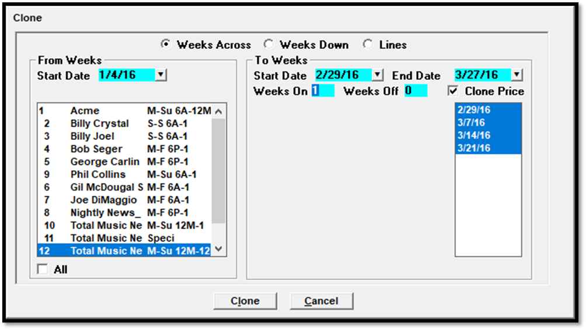
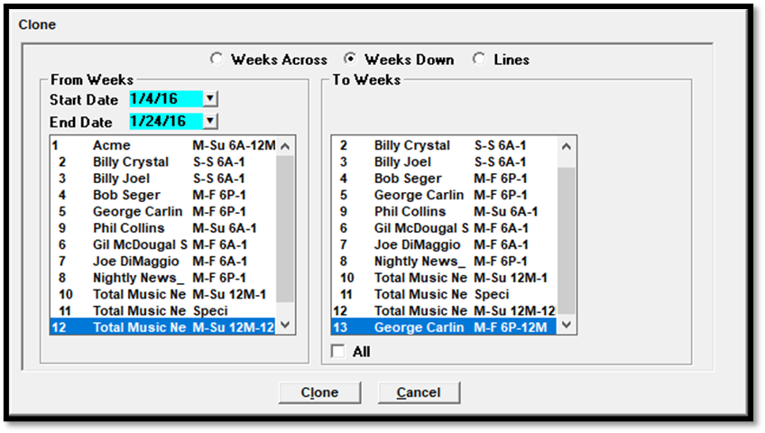
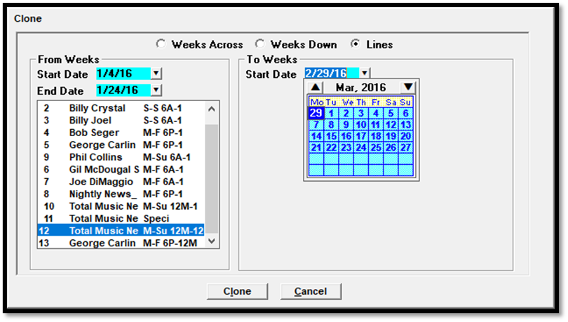

Clone
The Clone tool is used to duplicate a spot pattern to add additional weeks to a line using the “Weeks Across” option, or to clone weeks from one line to another line using the “Weeks Down” option, or to clone an entire line and create a new line, using the “Lines” option.
Clone Weeks Across
The Clone Weeks Across feature is used to copy a spot pattern from one week to one or more additional weeks for the same line.

To clone weeks across:
- From the Clone screen, select the “Weeks Across” radio button.
- Select the week you wish to copy from the “From Weeks Start Date” calendar dropdown.
- Select the vehicle or vehicles you wish to extend from the vehicle/daypart list.
- In the “To Weeks” section, enter the start and end date of the period you wish to clone the week to. This can be for a single week, or a lengthy date span. The weeks will be shown in the week list box that appears under the “clone price” checkbox.
- The “Weeks On” and “Weeks Off” fields are used to alternate weeks on and off in the “To weeks start and end date period”. To clone the week to the entire selected date span, set the “Weeks On” to 1, and the “Weeks Off” to 0.
- The price can also be copied by checking the “clone price” checkbox.
- Weeks shown in the week list box can also be selected and unselected by clicking them.
- Press the Clone button to create the cloned weeks.
Clone Weeks Down
The Clone Weeks Down feature is used to clone the spot counts from a selected date span from one line to another line or to multiple lines. In the picture below, the spot counts from Line 12 for the week span of 1/4/16-1/24/16 will be copied to Line 13.

To clone weeks down:
- From the Clone screen, select the “Weeks Down” radio button.
- Enter the start and end date period that you wish to copy, and from the list of contract lines on the left side of the screen, select the line that you wish to copy the spot counts from. Only one line can be selected here at a time.
- From the list of lines on the right side of the screen, select a different contract line, or multiple contract lines, then press the Clone button to copy the spot counts to those lines for the selected date period.
Clone Line
The Clone Lines option is used to create a new line by cloning an existing line. In the example below, a new line will be created starting on 2/29/16 based on Line 12, getting the spot counts from the weeks of 1/4/16-1/24/16 from Line 12.

To clone a line:
- From the Clone screen, select the “Lines” radio button.
- From the “From Weeks Start and End Date” fields, enter the start and end date that you wish to clone to the new line.
- Select the contract line that you wish to clone (more than one contract line can be selected from here to create more than one new line).
- From the “To Weeks” section, enter the start date that the new line should start from.
- Press the Clone button. A new line will be created for each selected contract line, using the entered start and end dates, starting from the “To week start date”.